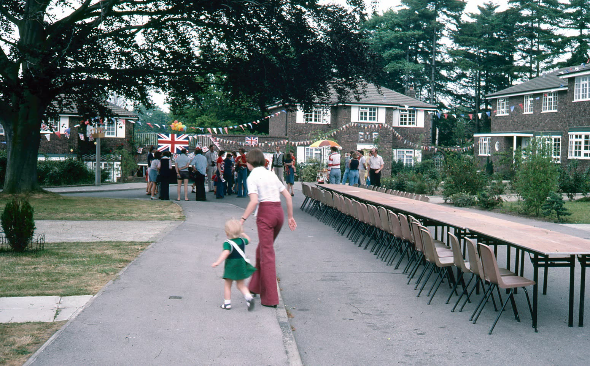

Een jaar met drie gezichten
Op 6 februari 1977 was het precies vijfentwintig jaar geleden dat Elizabeth II koningin werd. Het Verenigd Koninkrijk vierde dat een heel jaar lang, met een hoogtepunt op 6 en 7 juni: een dankdienst in St Paul's en alleen al in Londen meer dan vierduizend straatfeesten. Tafels op straat, vlaggetjes, taart. Het land liet zien wie het wilde zijn.

Foto: Chris Mitchell · CC BY-SA 4.0In datzelfde jaar veranderde de popmuziek op drie plekken tegelijk. In Californië maakte een band die uit elkaar viel een album dat de hele wereld wilde horen. In Londen bracht een groep jonge punks de koningin in verlegenheid, precies in haar jubileumweek. En in New York werd een film voorbereid die een discoplaat op de wereldkaart zou zetten. Rumours, Never Mind the Bollocks en Saturday Night Fever verschenen binnen tien maanden na elkaar. Het zijn drie verschillende ideeën over wat een popplaat is.
Het jaar had meer te bieden. Bowie bracht in januari Low uit, Kraftwerk in maart Trans-Europe Express, en Donna Summer had in de zomer een hit met I Feel Love, volgens AllMusic de eerste grote pophit waarvan de begeleiding volledig uit synthesizers bestond. Maar die drie grote platen deelden iets wat de rest niet deelde: ze veranderden niet alleen hoe muziek klonk, maar ook wie er naar luisterde en waarom.
Een plaat die bijna niet af kwam
Rumours verscheen op 4 februari 1977, een week later in het Verenigd Koninkrijk. Het was het tweede album van Fleetwood Mac in de bezetting met Lindsey Buckingham en Stevie Nicks, naast de oudgedienden Mick Fleetwood, Christine McVie en John McVie. Hun titelloze album uit 1975 was in 1976 nummer 1 in de Verenigde Staten geworden. Een vervolg moest dus volgen, en het was onzeker of dat zou lukken.
De band nam het grootste deel op in de Record Plant in Sausalito, een raamloos houten gebouw bij San Francisco. Mick Fleetwood eiste die studio: thuis opnemen zag hij niet zitten. De opnames begonnen in februari 1976 en het werk aan de plaat duurde uiteindelijk een jaar. Producers waren de band zelf met Ken Caillat en Richard Dashut. Caillat was eerst als technicus aangenomen, na de hit Rhiannon, en pas later vroeg Christine McVie hem om echt te produceren. Hij schreef er later een boek over, Making Rumours.
Het verhaal van de plaat wordt meestal verteld als een soap, en dat klopt ook. John en Christine McVie gingen na acht jaar huwelijk uit elkaar, na een half jaar non-stop toeren. Buckingham en Nicks, die al jaren aan en uit een stel waren, maakten het tijdens de opnames definitief uit. Fleetwoods vrouw, Jenny Boyd, had een affaire met zijn beste vriend. En dan waren er de slapeloze nachten en het zware cocaïnegebruik. Chris Stone, mede-eigenaar van de Record Plant, noemde het later in Billboard excess at its most excessive.
Het bijzondere is dat die ellende de muziek niet breekt. De plaat klinkt gepolijst, en dat was hard werken. Door herhaald afspelen waren de tapes uit Sausalito beschadigd geraakt: bas- en snaredrum klonken levenloos. Een specialist lijnde ze uit met behulp van de reservekopieën. Toen ook de 24-sporenmaster tijdens het overdubben slijtage vertoonde, werd met een Aphex Aural Exciter het hoog hersteld. Songbird nam Christine McVie op in de Zellerbach Auditorium in Berkeley, in een nachtsessie, omdat Caillat vond dat het nummer de akoestiek van een concertzaal nodig had. The Chain is een montage: een demo van McVie en een nummer van Nicks, flink geknipt en opgebouwd als filmmuziek, met de beroemde fretloze basloop van John McVie.
De geplande verschijning in september 1976 schoof op, en een uitverkochte Amerikaanse najaarstour werd afgelast om de plaat af te maken. Go Your Own Way, de eerste single, verscheen al in december 1976, ruim voor het album.

Go Your Own Way: de eerste single van Rumours, uitgebracht ruim voor de plaat zelf.
Vier singles haalden de top 10 van de Amerikaanse Hot 100. Dreams, in juni 1977, werd de enige nummer 1 van de band in die lijst. Het album zelf stond 31 niet-opeenvolgende weken bovenaan de Billboard 200 en was volgens Wikipedia het bestverkochte album van 1977. In het Verenigd Koninkrijk ging het langzamer: de eerste chartdatum was 26 februari 1977, maar pas op 28 januari 1978 stond Rumours er voor het eerst op 1, voor een week. In 1978 kreeg het album de Grammy voor Album of the Year, die Caillat en Dashut met de band deelden.
Dreams: rustig, bijna slaperig, en toch het enige nummer van Fleetwood Mac dat de Amerikaanse singlelijst aanvoerde.
Een boot op de Theems
Terwijl Rumours de Amerikaanse lijsten in ging, verliep het voor de Sex Pistols veel onrustiger. EMI had de band op 8 oktober 1976 getekend en zette haar op 6 januari 1977 weer op straat. A&M tekende de groep begin 1977, maar beëindigde het contract op 16 maart; de al geperste exemplaren van God Save the Queen werden vernietigd. Op 18 mei tekende Virgin Records. Ondertussen veranderde de bezetting: bassist Glen Matlock vertrok in februari en Sid Vicious volgde hem op. Matlock bleef wel medeschrijver van bijna alle nummers.
God Save the Queen kwam uit op 27 mei 1977, een week voor het jubileum. Op 7 juni, de dag van de dankdienst, probeerde de band vanaf de boot Queen Elizabeth op de Theems bij Westminster te spelen. Bij het afmeren greep de politie in. Elf mensen werden gearresteerd, onder wie manager Malcolm McLaren. De BBC en de commerciële radio draaiden de single niet, en de winkelketens Boots, WHSmith en Woolworths verkochten hem niet. Over wat de officiële hitlijst die week precies liet zien, lopen de verhalen uiteen, en dat blijft hier buiten beschouwing.
De hoes van de single was van Jamie Reid. Q riep hem in 2001 uit tot beste platenhoes, nummer 1 van honderd. Het schokkende zat hem niet in het volume, maar in de timing: een lied over de koningin, in de week waarin het land zich om haar heen schaarde.

God Save the Queen: de single die de band, een boot en het jubileumjaar aan elkaar knoopte.
Op 1 juli volgde Pretty Vacant, en op 14 oktober Holidays in the Sun. Vier singles dus, een stapel boycots en een hoop ruzie, maar nog geen langspeelplaat. Die kwam pas op 28 oktober.
Pretty Vacant: de derde single van de Sex Pistols, van 1 juli 1977.
De koning is dood
Op 16 augustus 1977 overleed Elvis Presley in Graceland, tweeënveertig jaar oud. Zijn verloofde Ginger Alden vond hem; in het Baptist Memorial Hospital werd hij om half vier dood verklaard. Volgens de officiële conclusie van de medisch onderzoeker was het een hartstilstand, zonder drugs. Die conclusie werd breed betwijfeld, en latere laboratoriumrapporten wezen op meerdere medicijnen. Bij de uitvaart op 18 augustus stonden naar schatting tachtigduizend mensen langs de route naar de begraafplaats, en twee jonge vrouwen kwamen om toen een auto fans raakte. Op 2 oktober werd hij herbegraven in Graceland, na een poging het lichaam te stelen.
De platenindustrie reageerde zoals ze dat doet: de persfabrieken van RCA draaiden dag en nacht en besteedden werk uit aan tientallen andere fabrieken. In het Verenigd Koninkrijk stond Elvis' 40 Greatest op 10 september een week op 1. Over de aantallen platen die daarna de deur uitgingen, doen allerlei cijfers de ronde, en die zijn niet te controleren.
Het past bij het jaar. De rock-'n-roll was ruim twintig jaar oud, en voor het eerst viel de grootste figuur ervan weg. Tegelijk liet 1977 zien wat er naast kwam te staan. In juni verscheen de dubbel-lp met de muziek van Star Wars, door John Williams met het London Symphony Orchestra, opgenomen in maart in Anvil Studios bij Denham. In oktober werd een discoversie van Meco Amerikaans nummer 1. Het heelal liep over in de discotheek, en niemand vond dat vreemd.
Een film die nog moest komen
De derde revolutie begon als een bestelling. Producer Robert Stigwood gaf de Bee Gees opdracht nummers te schrijven voor een film, en dat gebeurde in korte tijd bij het Château d'Hérouville in Frankrijk. De titel kwam uit een kleine ruzie. Stigwood wilde een nummer met de naam Saturday Night, maar de Bee Gees vonden dat een afgezaagde titel. Ze hadden al een nummer dat Night Fever heette, en de film werd volgens de gangbare verhalen daarom naar Saturday Night Fever hernoemd. Die versies verschillen onderling, maar de uitkomst staat vast.
Night Fever: het nummer waaraan de film volgens de overlevering zijn titel dankt.
Het geluid van Stayin' Alive heeft een opmerkelijke oorsprong. Drummer Dennis Bryon verliet een sessie na de dood van zijn moeder. De groep en producer Albhy Galuten maakten daarom een loop van twee maten drums uit Night Fever, en daaromheen werd het nummer gebouwd, met ongeveer 103 slagen per minuut. In de credits staat de drummer als Bernard Lupe, een knipoog naar sessiedrummer Bernard Purdie.

Stayin' Alive: gebouwd op een loop van twee maten drums.
De film zelf was gebaseerd op een verhaal dat niet helemaal klopte. Het artikel van Nik Cohn in New York uit 1976, waar de film op rust, had hij volgens zijn eigen bekentenis halverwege de jaren negentig grotendeels verzonnen. De film kostte ongeveer 3,5 miljoen dollar en bracht wereldwijd ongeveer 237 miljoen dollar op.
November: drie platen en een rechtszaal
Op 28 oktober 1977 verscheen Never Mind the Bollocks, Here's the Sex Pistols, opgenomen in Wessex Sound Studios in Londen met producers Chris Thomas en Bill Price. Er waren 125.000 voorbestellingen. Grote winkelketens weigerden de plaat, en sommige lijstmakers noteerden hem niet. De onafhankelijke platenzaken verkochten hem wel. Steve Jones speelde het grootste deel van de basgitaar. De hoes kwam, net als die van de single, van Jamie Reid: fel geel, zonder foto van de band.
 Foto: Albumhoes · afbeelding van Apple Music, getoond als citaat bij de bespreking
Foto: Albumhoes · afbeelding van Apple Music, getoond als citaat bij de besprekingHet bleef niet bij een boycot. Chris Seale, de manager van de Virgin-winkel in Nottingham, werd gearresteerd omdat hij het album uitstalde, op grond van de Indecent Advertisements Act uit 1889. Richard Branson betaalde de juridische kosten en schakelde John Mortimer in. Op 24 november 1977 diende de zaak bij de Nottingham Magistrates' Court. Seale werd op alle vier de punten vrijgesproken, met kritiek op de commerciële uitbuiting. Op 17 november had de plaat al BPI-goud gekregen, bijna drie weken na verschijning.
Op 15 november 1977 kwam de soundtrack van Saturday Night Fever uit bij RSO Records. De film volgde in december. Naast de Bee Gees staan Yvonne Elliman, Tavares, KC and the Sunshine Band, Kool and the Gang, MFSB en The Trammps op de plaat, met Disco Inferno van bijna elf minuten. In Nederland lagen volgens Trouw al 150.000 voorbestellingen, samen met Grease een record. In de Verenigde Staten stond de soundtrack in 1978 24 weken op 1, in het Verenigd Koninkrijk achttien weken achter elkaar, vanaf mei. Drie singles van de Bee Gees, How Deep Is Your Love, Stayin' Alive en Night Fever, werden Amerikaans nummer 1. Stayin' Alive was de tweede van zes opeenvolgende Amerikaanse nummers 1 die de broers Gibb schreven, ook voor Andy Gibb en Yvonne Elliman, waarmee ze het record van de Beatles evenaarden.
Rumours won in 1978 de Grammy voor Album of the Year, Saturday Night Fever in 1979, volgens Wikipedia als enige discoalbum. Never Mind the Bollocks kreeg zo'n prijs niet, maar stond in 2003 en 2012 op plek 41 van Rolling Stones lijst van de vijfhonderd beste albums, en kwam in 2015 in de Grammy Hall of Fame.
Wat de drie gemeen hadden
Op papier hebben de platen weinig met elkaar te maken. Rumours is van mensen die elkaar nauwelijks meer konden verdragen en toch heldere liedjes maakten. Never Mind the Bollocks is van jongens die het juist lelijk wilden laten klinken. Saturday Night Fever was eerst een filmplan en werd daarna een wereldwijd verschijnsel.
Toch doen alle drie iets wat daarvoor niet vanzelf sprak. Ze lieten zien dat een album meer kan zijn dan de singles waaruit het bestaat: het kan een verhaal zijn dat buiten de platenwinkel verteld wordt. Bij Rumours was dat het verhaal van een band, bij de Sex Pistols het verhaal van een land dat zich om zijn koningin schaarde, bij de Bee Gees het verhaal van een zaterdagavond. De opnames, de beschadigde tapes, de boycots en de deels verzonnen krantenartikelen hoorden er allemaal bij.
Dat is een goede reden om 1977 een van de beste albumjaren te noemen, maar niet omdat er in twaalf maanden zoveel meesterwerken verschenen. Het jaar telt drie platen die ook als nieuws, als schandaal en als film werden gelezen. Dat gebeurt zelden, en nog zeldzamer is dat het in één jaar gebeurt.